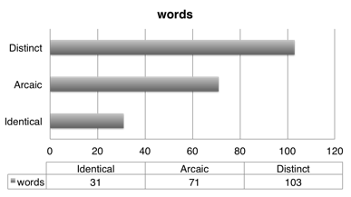

A glottochronological Guess on Al-Fayfiyah’s position in Semitics
Khadeejah Alaslani, Northeastern Illinois University
Alfayfiyah (also known as Fayfa, Faifa, Fifa, and Fifi) is an understudied and endangered language spoken in Fayfa Mountains, southwest of Saudi Arabia. It is distinguished among the Saudi Arabic speakers for its convoluted dialect. As the position of Fifi within Semitic and Afro-Asiatic is not clear, Swadesh lists for Fifi, Hijazi, Najdi, Sharqi and MSA were collected and analyzed to propose subgrouping relationships among the languages, and Fifi’s position in particular. The main goal behind the comparative study of the lexicon is for a glottochronological guess on Alfayfiyah's position in the Semitic group.
This research deals with the descriptions and analyses on the Swadesh lists of MSA, Fifi, Hijazi, Sharqi, and Najdi, in which all of them supply several similarities and differences. All of these dialects are spoken in Saudi Arabia. Fifi is spoken in Fayfa Mountain, southwest Saudi Arabia; Hijazi is spoken on the western coast; Sharqi is spoken in Al-Sharqiya province, at the eastern region; Najdi is spoken at the north central part of the kingdom, in and around Riyadh.
It is a widely held view that Hijazi Arabic is not pure Saudic because it has many borrowings from other dialects like Egyptian, Jordanian, and Palestinian. Najdi and Sharqi tend to have greater similarities to Modern Standard Arabic. On the other hand, a much debated question is whether Fifi is a dialect of Arabic or of another language. It is believed that Fifi is a dialect of Himyaritic and that Himyaritic and Classical Arabic both belong to the Arabic language family (Alfaifi, 2014). However, many scholars hold the view that Himyaritic was a pre-Islamic and medieval language that was spoken in Yemen and that it was not Arabic. Al-Hamd_n_ (died in 945 or after 971 AD), mention a language not only different from Arabic, but even hardly comprehensible to a native speaker of Arabic.
One of the methods to compare the above-mentioned dialects is to conduct a comparative analysis to examine how they are similar or different from each other. Morris Swadesh came up with a basic word list, known as the Swadesh word list. Through electing these basic words from a number of languages, a comparative study can be easily conducted. As it is widely known that each language is a structurally distinctive system of communication, any two languages can be analyzed to find out their contrast.
The approach applied in this study was qualitative. Fifi, Hijazi, Najdi, Sharqi word lists were collected vie online communication tools with my four informants, they are all native speakers of their dialects. MSA word list was collected from an online resource. To obtain accurate data, the native consultants were asked to record all the basic words. In essence, each word articulated by the informants was recorded, and noted in the field-notes.
After I did the cognates determinations I started to see three very obvious patterns. These three patterns are AAAAA with 77 words; ABAAA with 64 words; and ABCCC with 14 words. The least category, which is the third pattern, displays a colloquially strong relationship in which all of N, S, and H are identical, thus cognates. This representation might be contributed to the substitution of the unliked MSA word. For Fayfa, it has commonly been assumed that F is descended from Himyaritic, whether Himyaritic is descended from Arabic or from another language remain a very controversial argument.
Calculations:
To do a liberal calculation of the percentage of the 206 words, I have to find the number of cognates between each two languages. What I did is I counted how many times each two languages share cognates. After that, I found their percentages. The languages addressed here are as following:
|
|
Cognate percentages |
|
MSA & F |
85 cognates out of 203 = 41.87% |
|
MSA & N |
153 cognates out of 203 = 75.37% |
|
MSA & S |
152 cognates out of 203 = 74.88% |
|
MSA & H |
159 cognates out of 203 = 78.33% |
|
F & N |
87 cognates out of 203 = 42.86% |
|
F & S |
82 cognates out of 203 = 40.39% |
|
F & H |
88 cognates out of 203 = 43.35% |
|
N & S |
180 cognates out of 203 = 88.67% |
|
N & H |
171 cognates out of 203 = 84.24% |
|
H & S |
169 cognates out of 203 = 83.25% |
MSA & F in specific:

Diversification Time[1]: t = (ln C) ÷ (2 In r), in which:
t = 1000s of years of separation , C = percentage of cognates between 2 languages , r = a constant. % retention = .81 (per millennium), ln = natural logarithm: ln x = loge x, e =2.718281828... = lim (1 + 1/n)n
|
|
Diversification Time |
|
MSA & F |
C = 41.87%, -0.87/ 0.48 = 1,812 |
|
MSA & N |
C = 75.37%, -0.28/ 0.48 = 583 |
|
MSA & S |
C = 74.88%, -0.29/ 0.48 = 604 |
|
MSA & H |
C = 78.33%, -0.24/ 0.48 = 500 |
|
F & N |
C = 42.86%, -0.85 / 0.48 = 1770 |
|
F & S |
C = 40.39%, -0.9 / 0.48 = 1875 |
|
F & H |
C = 43.35%, -0.84 / 0.48 = 1750 |
|
N & S |
C = 88.67%, -0.12 / 0.48 = 250 |
|
N & H |
C = 84.24%, -0.17 / 0.48 = 354 |
|
H & S |
C = 83.25%, -0.18 / 0.48 = 375 |
Subgrouping:
MSA & F: languages in a family, MSA & N: languages in a family, MSA & S: languages in a family, MSA & H: languages in a family, F & N: languages in a family, F & S: languages in a family, F & H: languages in a family, N & S: dialects, N & H: dialects, H & S: dialects
References:
Alfaifi, Hassan J. (Name in Arabic). Third Edition.
Hetzorn, Robert. 1997. The Semitic Languages. Routledge.
John Huehnergard and Aaron D. Rubin. 2011. Phyla and Waves: Models of Classification of the Semitic Languages. In Stefan Weninger (ed.), The Semitic Languages: An International Handbook, 259-278. Berlin: Mouton.
Lewis, M. Paul, Gary F. Simons, and Charles D. Fennig (eds.). 2016. Ethnologue: Languages of the World, Nineteenth edition. Dallas, Texas: SIL International. Online version: http://www.ethnologue.com.
Rabin, Chaim. 1951. Ancient West-Arabian. London: Taylor's Foreign Press.
Rubin, Aaron D. 2008. The Subgrouping of the Semitic Languages. Language and Linguistics Compass 2. 61-84.
Swadesh, Morris. 1955. Towards greater accuracy in lexicostatistic dating. International Journal of American Linguistics 21:121-137.